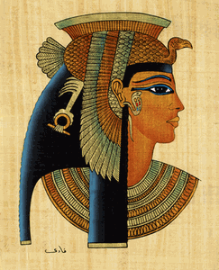
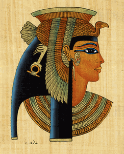
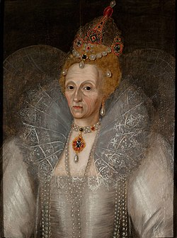
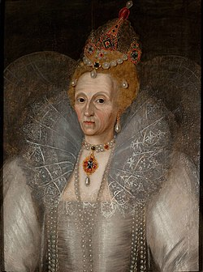

Strategy Alignment Blueprint
Use your archetype to define how you set direction, allocate resources, and pace change. The companion worksheet helps you align quarterly bets across product, people, and finance conversations.
Which Iconic Strategist Mirrors Your Leadership Style?
Discover which legendary figure your leadership instincts resemble. This 16-question experience blends historical insight with modern strategy, drawing from Alexander the Great, Cleopatra, Mandela, Churchill, and more.
Great commanders, reformers, and diplomats balanced vision, execution, and resilience in different ways. This quiz translates your instincts across those same pillars to surface the historical leader who mirrors your style.


Your match blends these pillars with historical context to create a modern leadership narrative you can act on today.
Featured Archetypes Alexander
Cleopatra
Napoleon
Mandela
Alexander
Cleopatra
Napoleon
Mandela
 Gandhi
Elizabeth
I
Visionary
Commander
Gandhi
Elizabeth
I
Visionary
Commander
Sets audacious horizons, keeps momentum high, and inspires teams by leading from the front.
Reads power shifts quickly, forges alliances, and turns relationships into leverage.
 Bridge Builder
Bridge Builder
Listens deeply, reframes conflict, and holds coalitions together through empathy and principle.
Combines discipline with speed, rewarding merit while adapting tactics in real time.
Built with the same polish as our football quiz—modern UI, clear scoring, and leadership guidance grounded in historical strategy.
Every answer maps to vision, influence, resilience, and reform energy so your matched archetype reflects the way you truly lead.

Profiles draw from commanders, diplomats, and reformers—giving you context on how iconic leaders solved similar challenges.

Each result pairs strengths and blind spots with modern applications—perfect for exec teams, classrooms, and personal coaching.

Generate a link to compare leadership archetypes with friends or teammates and align strengths across your group.
Every archetype ships with strategic talking points, development moves, and facilitation prompts so you can translate the result into immediate leadership traction—not just inspiration.
Use your archetype to define how you set direction, allocate resources, and pace change. The companion worksheet helps you align quarterly bets across product, people, and finance conversations.
Turn your result into a 30-minute 1:1 agenda with prompts that surface working styles, escalation triggers, and collaboration norms across hybrid teams.
Pair archetypes with case studies and reflection questions to let students role-play crisis briefings, negotiation tables, and nation-building labs.
Translate quiz outcomes into a 90-day development roadmap complete with leading indicators, stakeholder feedback loops, and celebration moments.
The scoring engine blends qualitative leadership research with decision science so each match feels precise, defensible, and ready to present to stakeholders.
Every response is mapped to leadership behaviors—pace, coalition building, and conviction—weighted against archetypal case studies.
We run a proximity analysis across 33 leader profiles, surfacing primary and runner-up matches when statistically significant.
Strengths, risks, and growth levers are reframed for contemporary contexts: remote leadership, AI strategy, and cross-cultural collaboration.
Your report bundles tactical prompts, workshop ideas, and team debrief agendas so the insight moves straight into execution.
The methodology is benchmarked against leadership competency frameworks, ensuring you can cite the quiz in performance reviews, talent calibrations, or classroom syllabi with confidence.
Turn the result into a practical toolkit across the full leadership lifecycle— from executive offsites to mentoring circles and MBA seminars.
Anchor your QBR storytelling around the archetype to highlight strategic intent and decision velocity.
Layer the quiz into talent reviews to spark calibrated dialogue about potential, succession planning, and stretch assignments.
Use the archetypes as anchors for simulations, reflective journaling, and peer coaching to accelerate applied learning.
Bring archetypes into advisory sessions to diagnose decision-making patterns and co-create better governance cadences.
Answer 32 questions to discover which legendary leader reflects your strategic approach.
You lead like
A quick visual guide to each historical archetype with signature strengths and ideal modern arenas.
Browse quick snapshots of each leader archetype. Search or filter to compare strengths before diving into your results.
Momentum-driven trailblazer who unifies teams around daring campaigns and rapid expansion.
Diplomatic power player translating relationships, narrative, and timing into strategic leverage.
Operational mastermind pairing bold strategy with meticulous execution and elite standards.
Reconciles divided groups with dignity, patience, and vision for an inclusive future.
Transforms steadfast values into collective action through disciplined calm and symbolism.
Balances factions from the center with poise, optics, and impeccable timing.
Empathetic mediator framing shared purpose through humble storytelling and resolve.

Crisis communicator who fuels perseverance with vivid language and stubborn courage.
Network builder who scales systems fast, rewards merit, and adapts at breakneck speed.

Bold reformer translating modernization mandates into disciplined, lasting change.
Cultured reformer leveraging art, ideas, and diplomacy to expand influence and institutions.

System builder converting chaos into durable order, rituals, and shared governance.

Compassionate reformer redirecting imperial power toward welfare, justice, and unity.

Philosopher-king balancing duty, discipline, and calm leadership under pressure.

Inclusive empire builder who honors local traditions while uniting diverse regions.
High-velocity executor who finishes what was started, even if it means racing through deserts to do it.
Systems architect who turns explosive growth into audited routes, satrapies, and predictable revenue.
Coalition orchestrator who uses spectacle, ritual, and massive builds to keep empires synchronized.
Frontier polymath blending engineers, priests, and cavalry to hold the line against chaos.
Justice-first modernizer who funds academies, tax reform, and welfare audits to keep society trusting the center.
Restoration architect weaving faith and reform into a resilient new state.
Diplomatic caretaker managing elite coalitions without losing control.
System designer keeping peace through structured hierarchy and long-term foresight.
Philanthropic strategist who converts wealth into education, trade corridors, and goodwill.
Lawgiver-architect who marries dazzling culture with rigorously fair governance.
Narrative-savvy builder who legitimizes change through trade, art, and immaculate logistics.
Intense systems innovator who weaponizes training, discipline, and rapid iteration.
Conviction-charged catalyst who rallies people through fearless presence and moral clarity.
Precision liberator who maps covert operations with empathy, courage, and tactical patience.
Continental coalition builder translating liberation momentum into bold republican experiments.
Adaptive negotiator-warrior who keeps empires guessing with bold pivots and layered alliances.
Honor-first mediator who pairs disciplined defense with treaties respected by every side.

Bold trade commander who seizes chokepoints, races ahead of empires, and knows when to vanish.
Your guide to how the Historical Leaders Personality Quiz works and how to interpret the archetypes.
Discovered your historical counterpart? Compare results with friends or teammates and swap strategies on how each archetype would handle today’s toughest challenges.